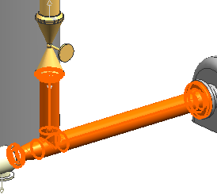

在管道通路导航器中，展开 RUN_1并点击第一个管段，SPL_001_A。
相应的组件将在图形窗口中高亮显示，如果您展开管道通路导航器中的 SPL_001_A 节点，您将会看到包含在这个管段中的组件。

|
注释 |
管段名称的分配是随机的，您选择 SPL_001_A 后，可能在图形窗口中高亮显示的是另一个管段。 |
点击其它两个管段，并查看在图形窗口中高亮显示的是哪些组件。
记住，管段分隔符将决定管段的起始位置和终止位置。